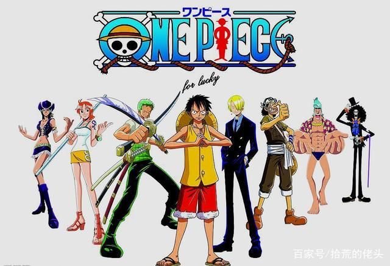
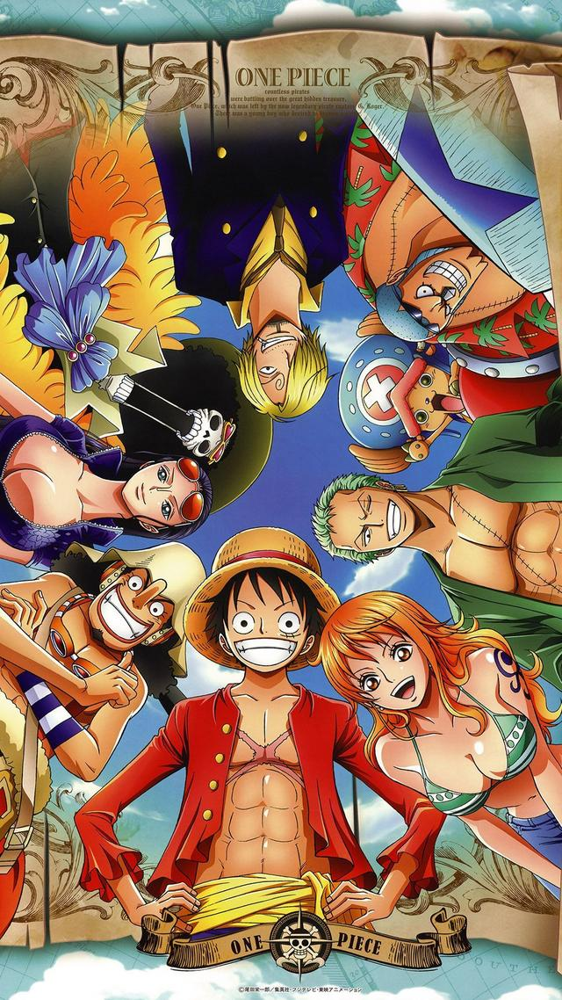

蒙奇·D·路飞
蒙奇·D·路飞，是日本动漫《航海王》的男主角。草帽海贼团船长。由于他的标志性特征是一顶草帽，因此常被直接称呼为草帽小子或草帽路飞。梦想是找到传说中的One Piece，成为海贼王。
性格积极乐观，爱憎分明且十分重视伙伴，对任何危险的事物都超感兴趣。看似白痴，却是一个大智若愚型的无愧船长之职的人。和其他传统的海贼所不同的是，他并不会为了追求财富而无故杀戮，而是享受着身为海贼的冒险。
罗罗诺亚·索隆
罗罗诺亚·索隆(Roronoa Zoro)日本漫画《海贼王》人物，草帽一伙中的战斗员，是悬赏过亿武艺高强的三刀流剑士，二年前超新星11人之一，能够自由操纵三把刀战斗。爱喝酒，爱睡觉，讲义气，海贼第一超级大路痴。为了小时候与挚友的约定而踏上了前往世界第一剑士的道路，随后成为主角蒙奇·D·路飞的第一个伙伴。在初次败给世界第一剑士"鹰眼米霍克"后向路飞发誓永不再败，并且更加努力的锻炼自己。两年后的他成功与伙伴们汇合，并且为了实现自己的梦想，奔赴强者如云的新世界。
文斯莫克·山治
山治（サンジ，Sanji）是日本人气漫画《航海王》中的主要角色之一。草帽海贼团厨师，金发，有着卷曲眉毛，永远遮住半边脸的家伙，香烟不离口，最爱女人，很花心但很有风度，海贼中的绅士。
小时候跟随大海贼红脚哲普学习厨艺。踢技以快准狠被海军称之为"黑足"，但从不愿意伤害任何的女性，哪怕是敌人。在经过司法岛一战后也成了悬赏对象，首次悬赏就有7700万之高（但通缉令是画上去的）。梦想是找到传说之海All Blue而跟随路飞一同进入了伟大航路。是文斯莫克家族的第三子。